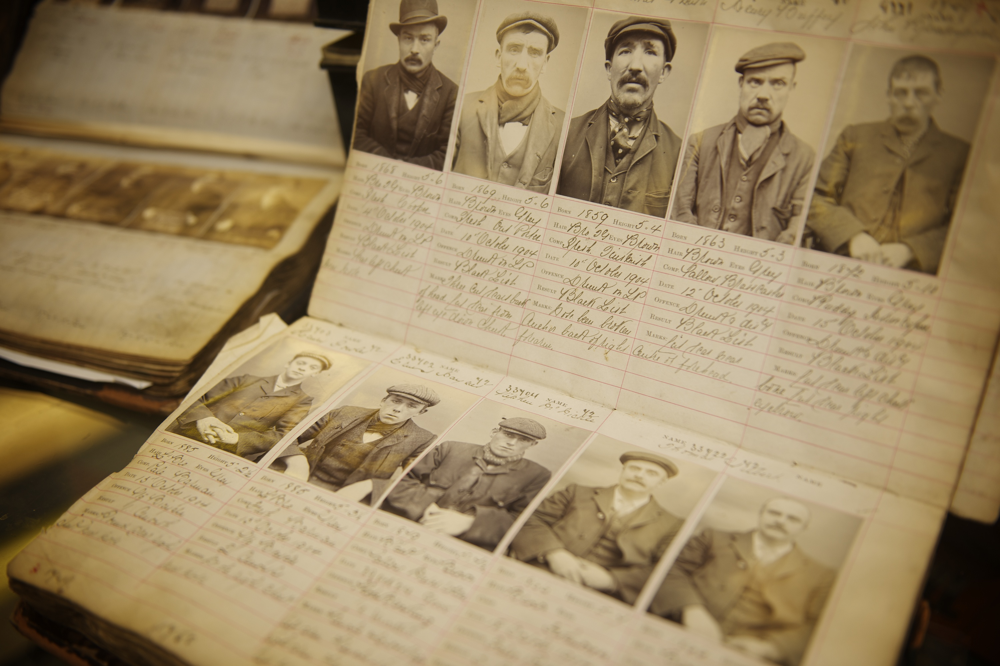

Demônios de Birmingham

Os Peaky Blinders eram uma organização criminosa, originalmente de Birmingham, Inglaterra, que operava no
território das Midlands Ocidentais, desde o final do século XIX até aos anos 30 do século XX. O grupo
possivelmente liderado por Thomas Gilbert, que nasceu das duras privações económicas da classe trabalhadora
britânica, era composto em grande parte por jovens desempregados que rapidamente obtiveram poder social e
influência política através de roubos, fraude, contrabando, sequestros e outras actividades ilícitas como a
manipulação de corridas de cavalos e apostas. Os membros deste grupo usavam a roupa como forma de
identificação, que incluía casacos personalizados e feitos à medida, sobretudos com lapela, coletes abotoados,
lenços de seda, calças à boca de sino, botas de couro e boinas pontiagudas com pala. Eram altamente
organizados e funcionavam com um sistema de hierarquia próprio.
Fonte